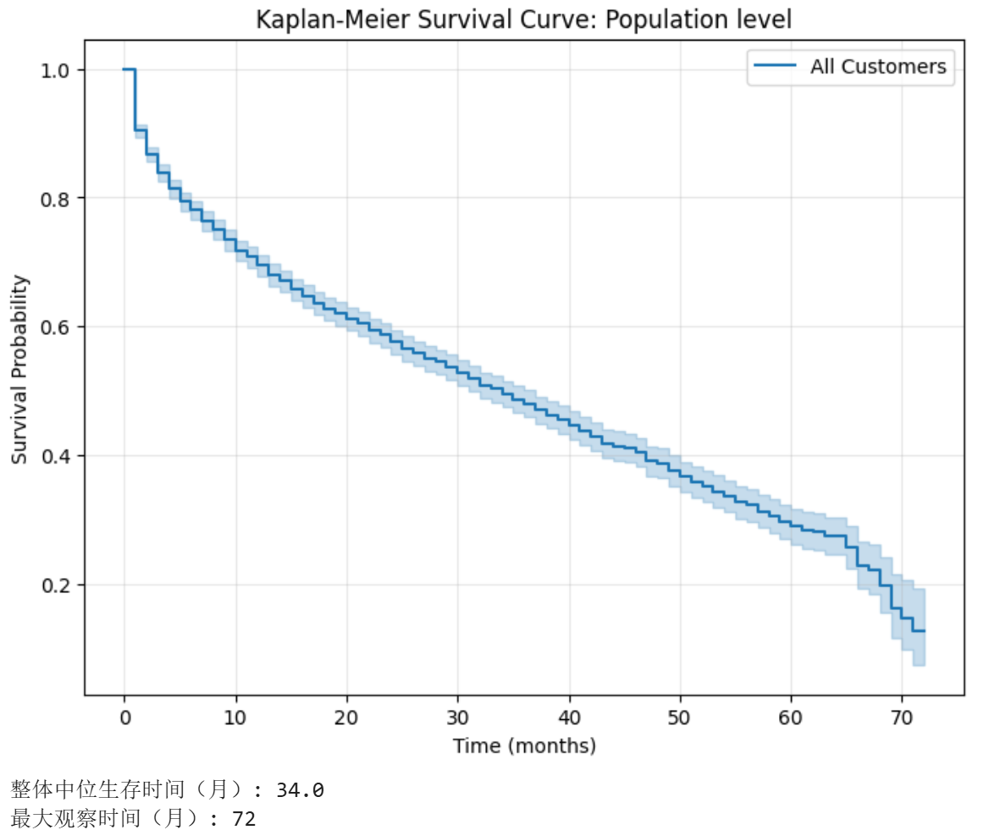
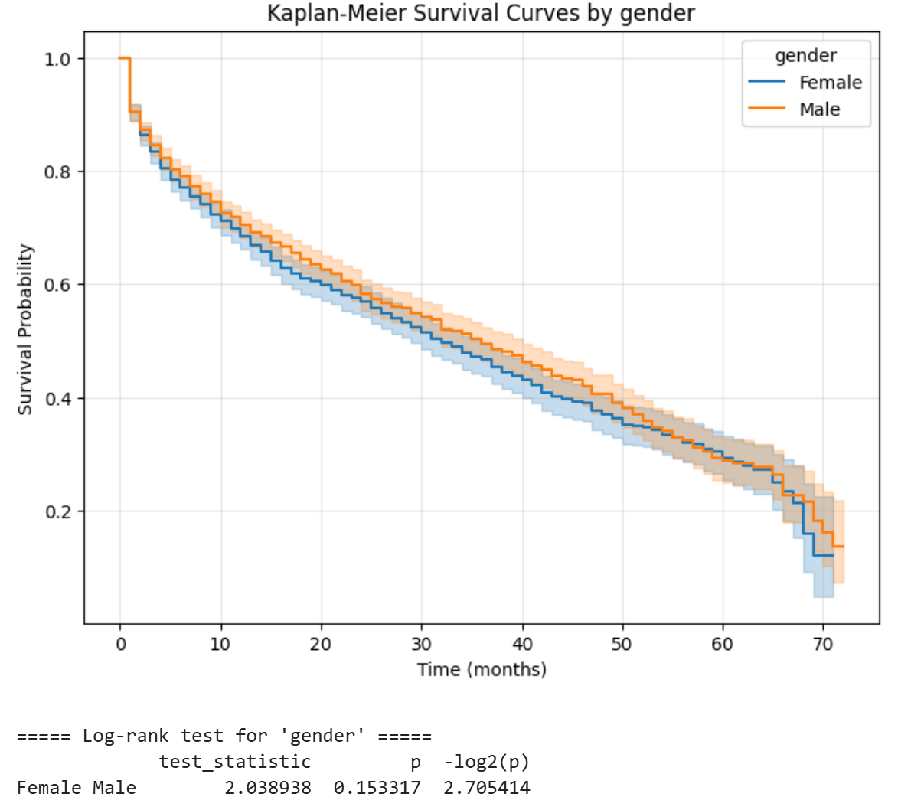
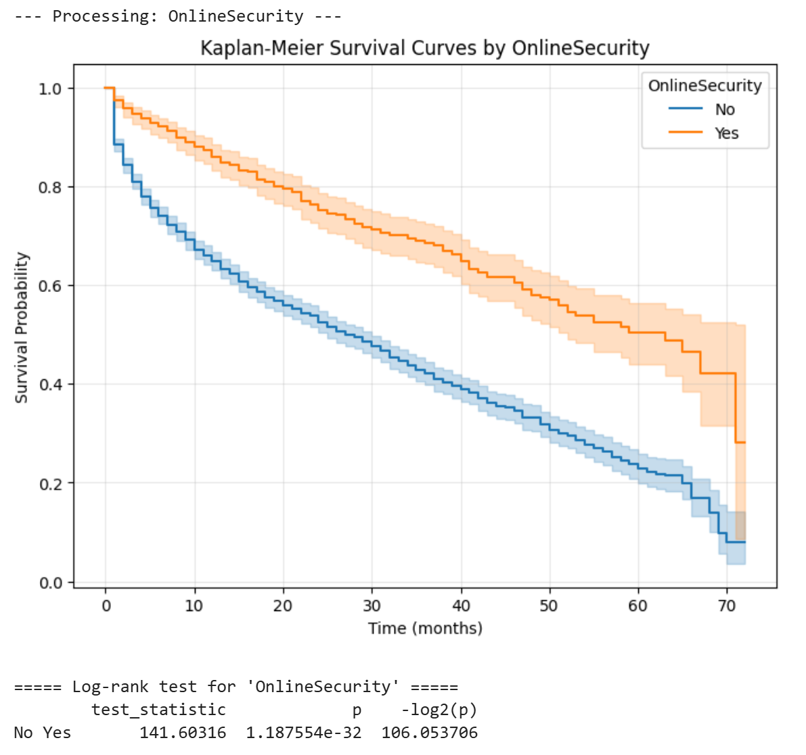
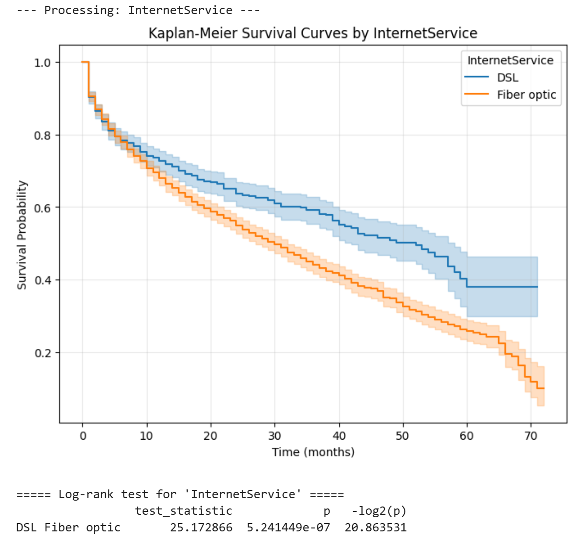
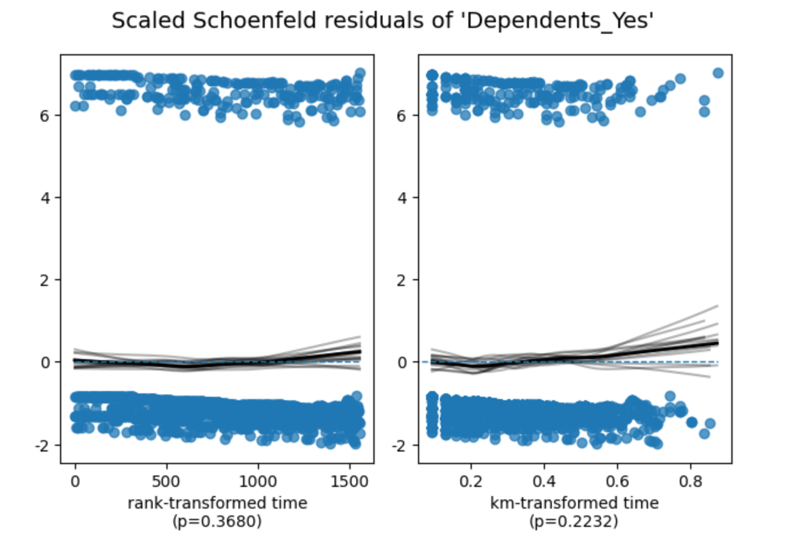
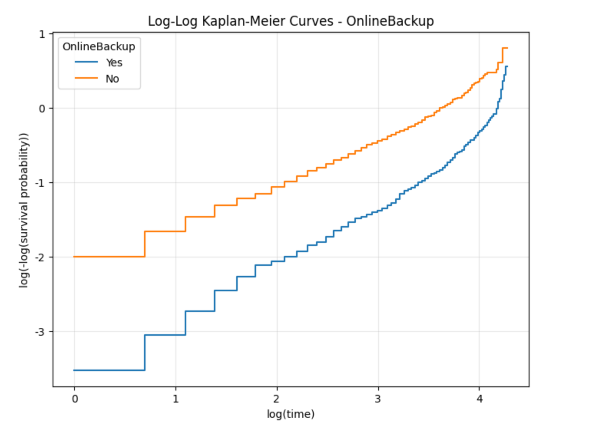

基于 Telco Customer Churn 数据集，对月付型互联网服务客户进行生存分析，探索影响客户留存时间的关键因素。
本次分析旨在识别提前终止服务（流失）的风险因素，并量化各因素对客户“生存时间”（即客户持续使用服务的月数）的影响。数据集包含7043条记录，经筛选后保留3351名月付型且使用互联网服务的客户。主要变量包括：tenure（生存时间）、Churn（事件指示变量，1=流失，0=删失）及多个协变量（性别、老年公民、伴侣、依赖者、互联网服务类型、在线安全、在线备份等）。

整体中位生存时间为34.0个月，最大观察时间为72个月。曲线显示随着时间推移，生存概率逐渐下降，前20个月流失加速，之后趋于平缓。
选取几个关键变量展示分组生存曲线及log-rank检验结果：

| 分组 | 检验统计量 | p值 | -log2(p) |
|---|---|---|---|
| Female vs Male | 2.0389 | 0.1533 | 2.705 |
性别间生存曲线无统计学显著差异（p>0.05）。

| 分组 | 检验统计量 | p值 | -log2(p) |
|---|---|---|---|
| No vs Yes | 141.603 | 1.19e-32 | 106.05 |
未购买在线安全服务的客户流失风险显著更高（p<<0.001）。

| 分组 | 检验统计量 | p值 | -log2(p) |
|---|---|---|---|
| DSL vs Fiber optic | 25.173 | 5.24e-07 | 20.86 |
使用DSL客户的生存期显著长于光纤客户。
其他变量（如Partner, Dependents, OnlineBackup等）的log-rank检验结果均显示在p<0.001水平上显著，表明这些因素也显著影响客户流失时间（具体摘要见完整输出）。
前10个月的生存概率序列如下（已保存至 survival_probs_dsl_first10months.csv）：
| 时间(月) | 生存概率 |
|---|---|
| 0 | 1.000000 |
| 1 | 0.902698 |
| 2 | 0.864380 |
| 3 | 0.834702 |
| 4 | 0.810522 |
| 5 | 0.794352 |
| 6 | 0.783900 |
| 7 | 0.776362 |
| 8 | 0.768486 |
| 9 | 0.750833 |
选取四个具有显著影响且业务可解释的变量构建Cox模型：是否有家属(Dependents_Yes)、是否为DSL用户(InternetService_DSL)、是否有在线备份(OnlineBackup_Yes)、是否有技术支持(TechSupport_Yes)。模型结果如下：
| 协变量 | 系数(coef) | 风险比(exp(coef)) | 标准误 | z值 | p值 | -log2(p) |
|---|---|---|---|---|---|---|
| Dependents_Yes | -0.32865 | 0.7199 | 0.07086 | -4.638 | 3.52e-06 | 18.116 |
| InternetService_DSL | -0.21733 | 0.8047 | 0.05904 | -3.681 | 2.32e-04 | 12.073 |
| OnlineBackup_Yes | -0.77662 | 0.4599 | 0.05916 | -13.128 | 2.28e-39 | 128.37 |
| TechSupport_Yes | -0.63917 | 0.5277 | 0.07533 | -8.485 | 2.16e-17 | 55.360 |
所有系数的p值均小于0.001，表明这些变量对生存时间有极强的统计显著性。风险比(exp(coef)) <1 表示具有该特征的客户流失风险更低（生存期更长）。例如，有在线备份的客户流失风险比无备份者低约54%。
使用Schoenfeld残差法检验Cox模型的比例风险假设，结果如下：


检验结果显示：
| 变量 | 检验方法 | 统计量 | p值 | 结论 |
|---|---|---|---|---|
| Dependents_Yes | km / rank | 1.48 / 0.81 | 0.22 / 0.37 | 未违反假设 |
| InternetService_DSL | km / rank | 20.98 / 26.71 | <0.005 | 违反假设 |
| OnlineBackup_Yes | km / rank | 17.80 / 17.47 | <0.005 | 违反假设 |
| TechSupport_Yes | km / rank | 8.09 / 13.76 | <0.005 | 违反假设 |
三个变量(InternetService_DSL, OnlineBackup_Yes, TechSupport_Yes)均显著偏离比例风险假定。建议采用分层Cox模型或使用时依协变量进行修正。但鉴于这些变量均为二分类且业务意义明确，当前模型仍可视为风险因素的初步评估。